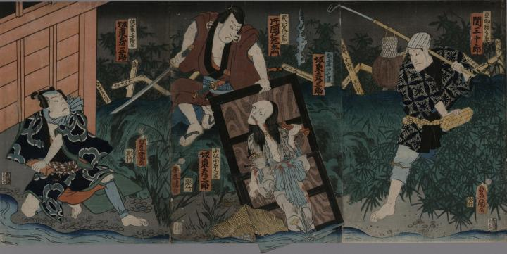

お岩は、伊右衛門の企みで毒を盛られ、ひどい顔になり、小仏小平とともに一枚の板に釘付けにされた。そのお岩の亡霊が現われている。伊右衛門が板をつかみ、お岩がにらみつけている。お岩の身体の各部から血が流れている。お岩の下半身の絵をめくると小仏小平が現われる仕掛けが施されている。
著作者：豊國／出典：親書誌：U426_nichibunken_0376：隠亡堀の場 : 東海道四谷怪談；オンボウボリ ノ バ : トウカイドウ ヨツヤ カイダン／日付：2014／資源識別子：U426_nichibunken_0376_0001_0001
Copyright (c)2010- International Research Center for Japanese Studies, Kyoto, Japan. All rights reserved.